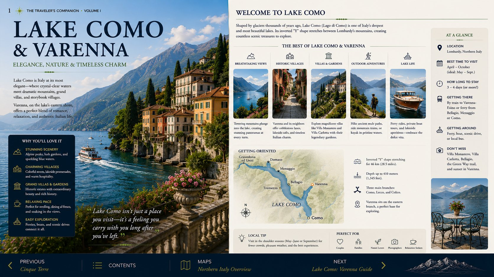
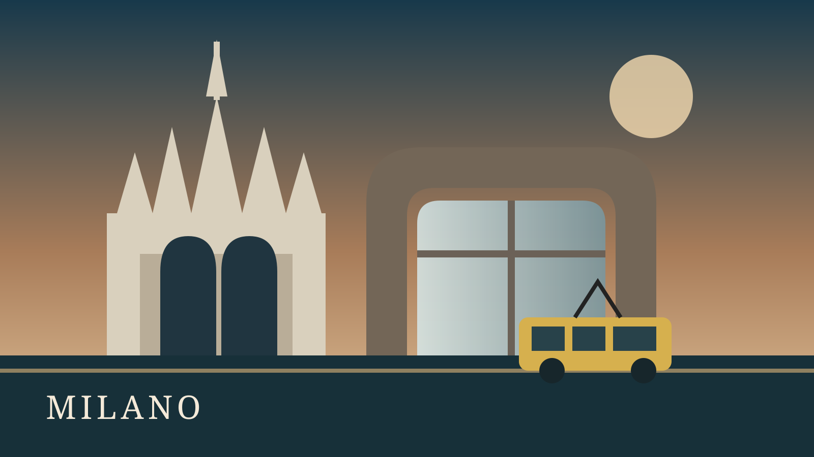

Trip dashboard
Preparing your journey
Venice begins the adventure
Open the complete route, destination guide or practical reference from one place.
Route at a glance
Open the right chapter fast.
Book ahead
Reservation priorities
On the road
Quick reference
Destination chapters
The complete journey.
 01
012 nights
Venice
Canals, landmarks and quiet evening walks.
 02
022 nights
Dolomites
Ortisei, lifts and moderate mountain walks.
 03
032 nights
Cinque Terre
Villages by rail, ferry and coastal path.

042 nights
Lake Como
Varenna, Bellagio and Villa Monastero.
 05
052 nights
Lake Maggiore
Islands, gardens and a graceful finale.

Optional explorer
Milan & Great Day Trips
Duomo, Leonardo, dining, hotels, Lake Como, Bergamo, Monza, Turin and Motor Valley.
Open guide →